السلسلة 10
السيارة (صنف B) · 40 سؤال بالصوت. حاول تجاوب بوحدك، من بعد شوف الجواب.
السؤال 1
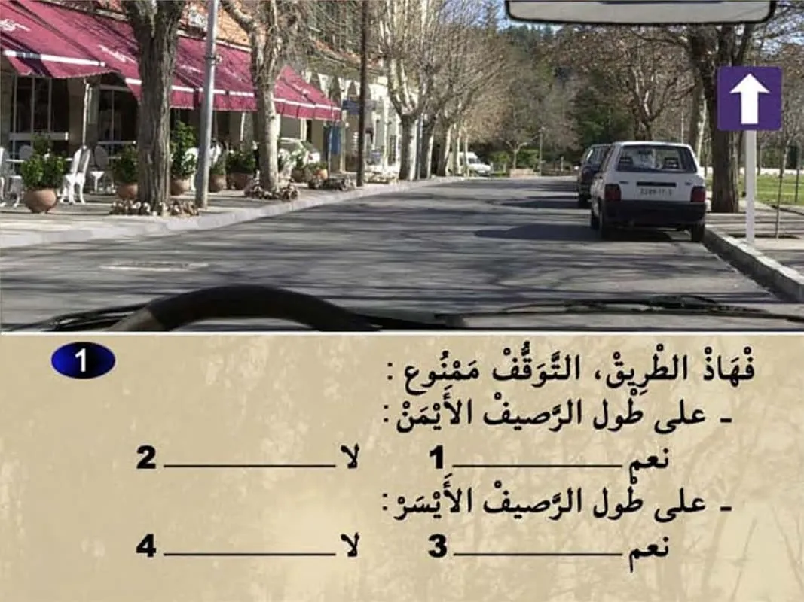
بيّن الجواب
الجواب الصحيح: 2 و 4
أولا نحن نتواجد في طريق ذات إتجاه واحد، في مثل هذا النوع من الطرق يمكنني التوقف على اليمين وعلى اليسار. لا يوجد علامة طرقية تمنعني من التوقف، يمكنني التوقف على اليمين أو على اليسار.
السؤال 2
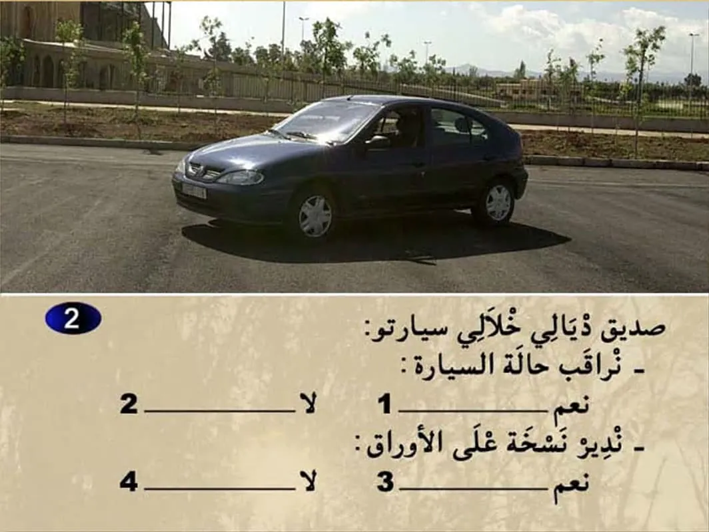
بيّن الجواب
الجواب الصحيح: 1 و 4
حالة السيارة يجب مراقبتها دائما، تكون سيارتك أو سيارة شخص اخر أو سيارة كراء فيجب على الشخص مراقبتها. بالنسبة لنسخة على الأوراق فهي غير مقبولة في حالة المراقبة الطرقية من طرف الشرطة أو الجمارك، يجب الإدلال بالأوراق الأصلية.
السؤال 3
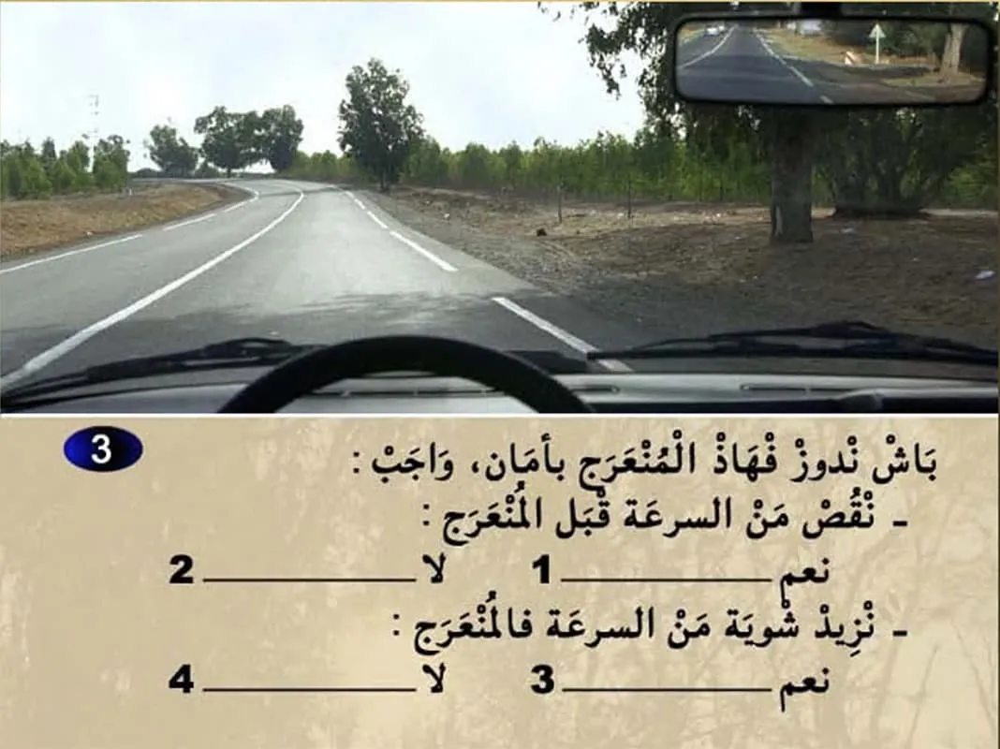
بيّن الجواب
الجواب الصحيح: 1 و 3
في جميع المنعرجات قبل الوصول يجب على الشخص الإنقاص من السرعة، وعند الوصول إلى المنعرج يجب الزيادة قليلا في السرعة لكي نكمل عملية المرور من المنعرج بطريقة جيدة وامنة وسلسة.
السؤال 4
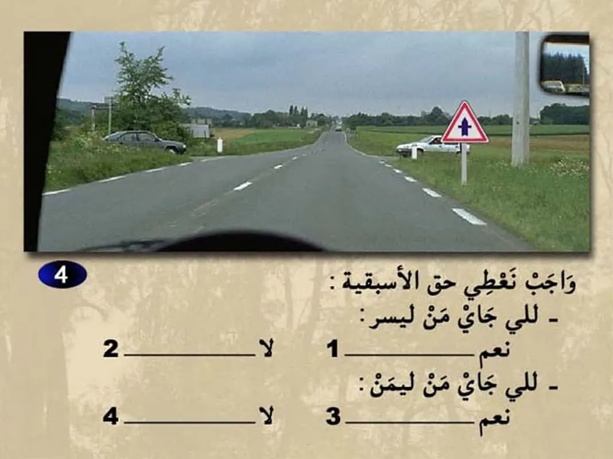
بيّن الجواب
الجواب الصحيح: 2 و 4
العلامة الطرقية تعني لدي حق الأسبقية، بما أنني أتواجد في طريق رئيسية فلا أعطي حق الأسبقية لأي سيارة، أقوم بالمرور أنا الأول.
السؤال 5
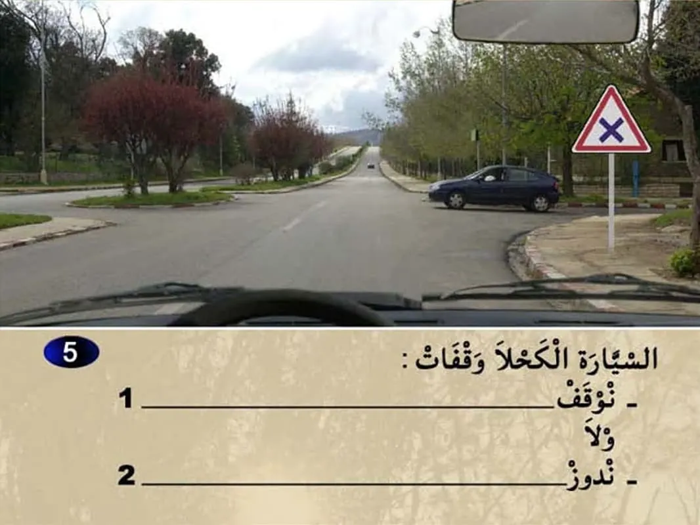
بيّن الجواب
الجواب الصحيح: 1
السيارة السوداء توقفت فقط لأنها تريد التأكّد من حالة الطريق، لأننا نتواجد في ملتقى الطرق يجب على كل سيارة وصلت إلى ملتقى الطرق الإنقاص من السرعة والإنتباه وبعد ذلك المرور. يوجد علامة ملتقيات الطرق والأسبقية للسيارات القادمة من اليمين، إذن أتوقف وأسمح للسيارة بالمرور أولا. الأجابة رقم 1.
السؤال 6
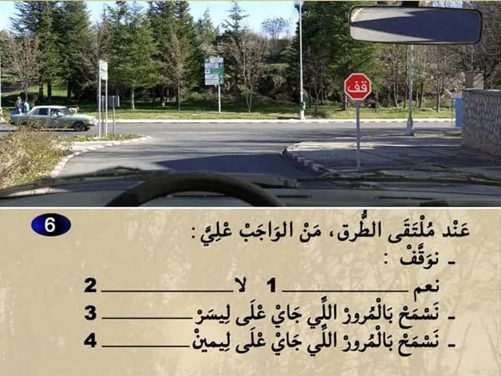
بيّن الجواب
الجواب الصحيح: 1 و 3 و 4
الوقوف إجباري عند العلامة الطرقية قف، والأسبقية في ملتقيات الطرق للسيارات القادمة من اليمين ومن اليسار أيظا.
السؤال 7
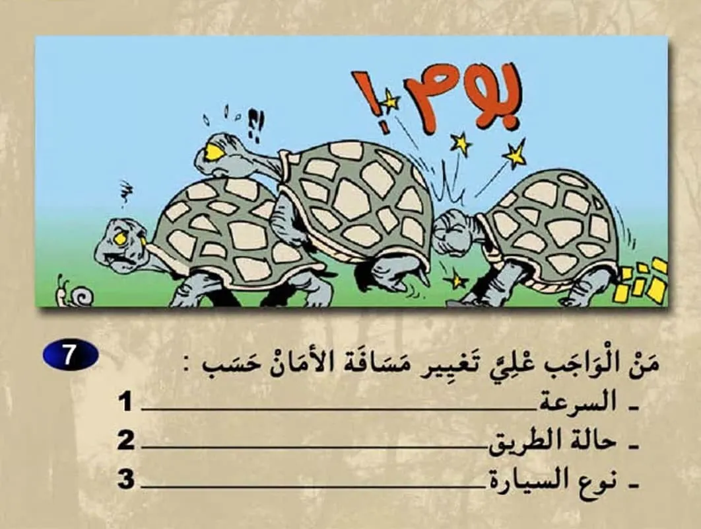
بيّن الجواب
الجواب الصحيح: 1 و 2
كلما كانت سرعة السيارة كبيرة فتحتاج لمسافة أمان تكون طويلة بينك وبين السيارة الأمامية، وحالة الطريق تعتبر سببب لزيادة مسافة الأمان لأن عند وجود أمطار أو ثلج مثلا في الطريق فمن الواجب علي الزيادة في مسافة الأمان، بالنسبة لنوع السيارة فليس لديها علاقة في تغيير مسافة الأمان.
السؤال 8
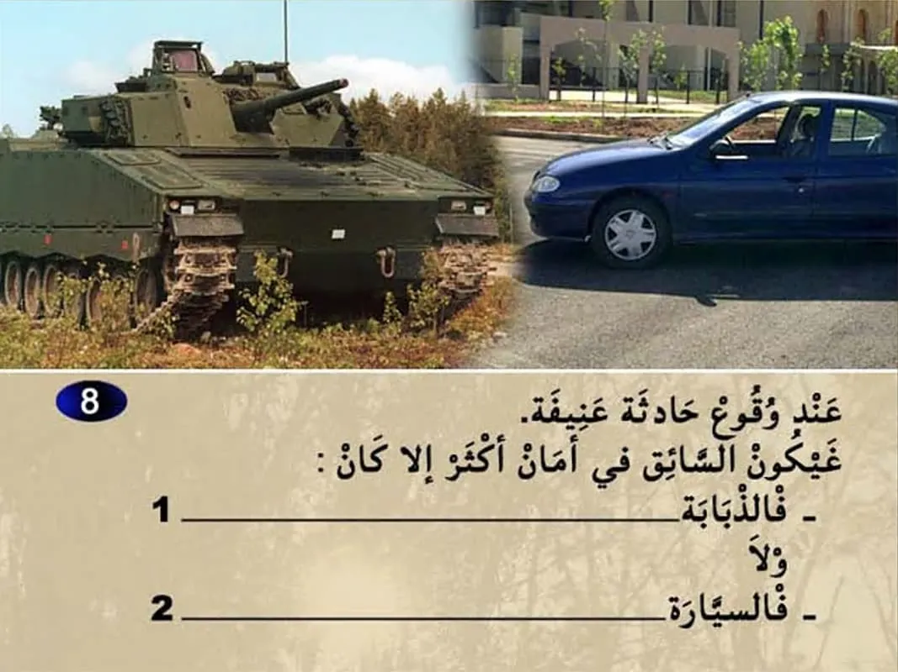
بيّن الجواب
الجواب الصحيح: 2
أغلب الأشخاص وفي أول مرة يقومون بالإجابة على هذا السؤال بأن الذبابة هي الأكثر أمانا، لكن السيارة يوجد بها نظام أمان أكثر من الذبابة، مثلا في السيارة مجهزة بالأكياس الواقية ( Airbag )، وحزام السلامة ... الإجابة الصحيحة في السيارة 2.
السؤال 9
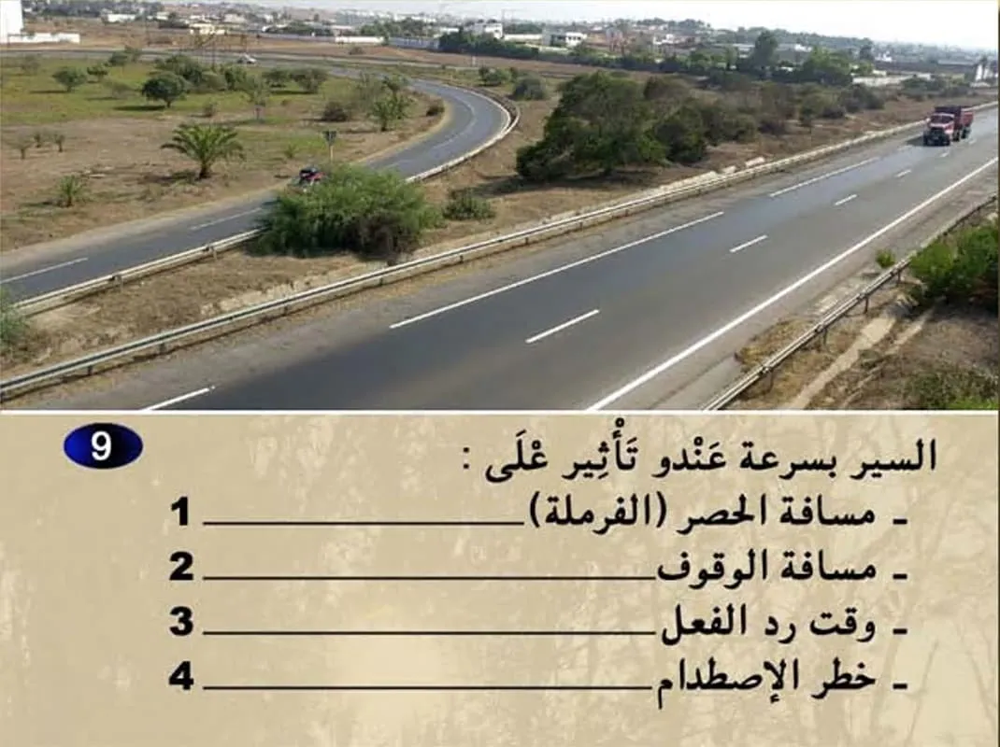
بيّن الجواب
الجواب الصحيح: 1 و 2 و 4
السير بسرعة لديه تأثير على مسافة الحصر أي الفرملة وكذلك مسافة الوقوف لديها علاقة بالسرعة وأخيرا خطر الإصدام لديه علاقة بالسياقة بسرعة فكلما كانت السرعة عالية تكون نسبة خطر الإصدام عالية اي إحتمالية الإصطدام وحادثة مرورية أكثر و تكون أيضا الحادثة أكثر خطورة، لكن بالنسبة لوقت رد الفعل فليس لديه أي علاقة بالسير بسرعة. الإجابة الصحيحة هي 1 و 2 و 4.
السؤال 10
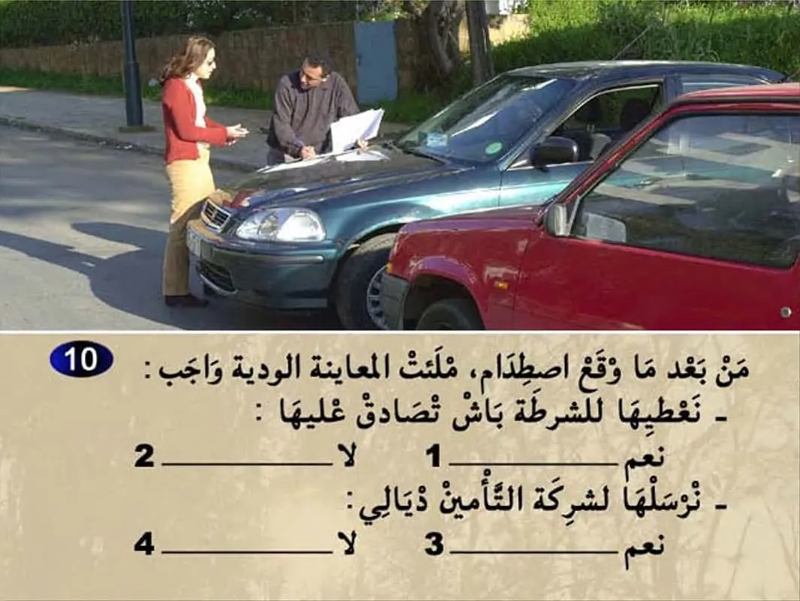
بيّن الجواب
الجواب الصحيح: 2 و 3
عند حدوث حادثة سير والخسائر تكون مادية فقط وليست بشرية، نقوم بعمل معاينة ودية، وهذه المعاينة الودية لا تحتاج لمصادقة الشرطة ونتحتاج الى إرسالها فقط لشركة التأمين الخاصة بك قبل مرور 5 أيام.
السؤال 11
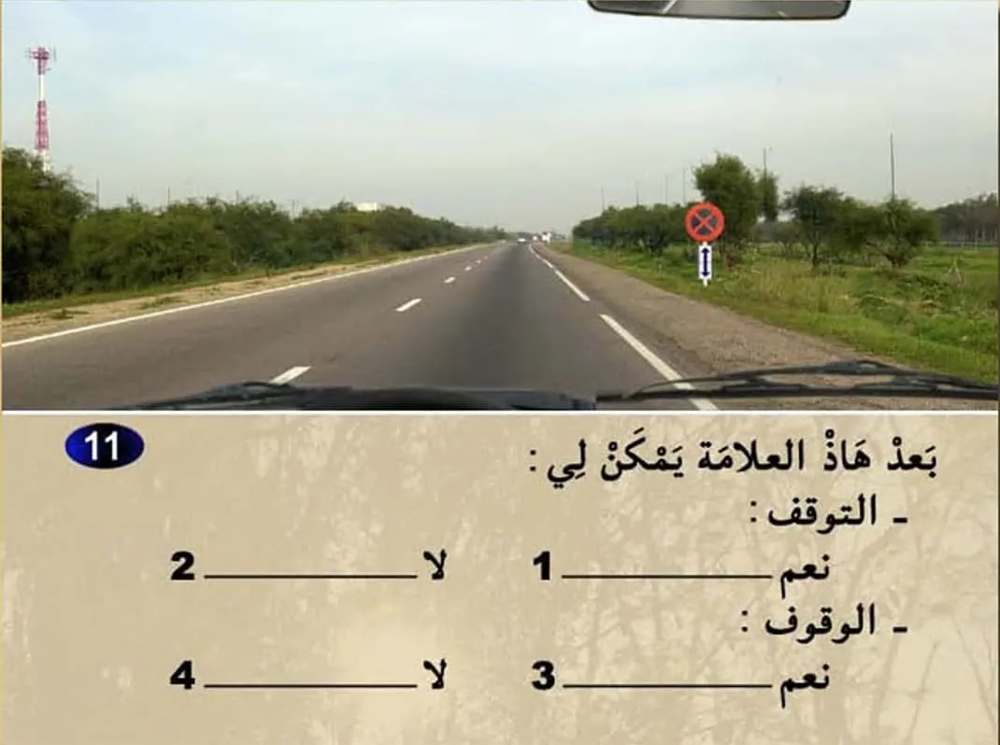
بيّن الجواب
الجواب الصحيح: 2 و 4
العلامة الطرقية تعني ممنوع الوقوف والتوقف، وفي أسفل العلامة الطرقية تحتوي على علامة تكميلية ( 2 أسهم )، وهي تعني على طول الطريق، يعني على طول الطريق ممنوع الوقوف والتوقف.
السؤال 12
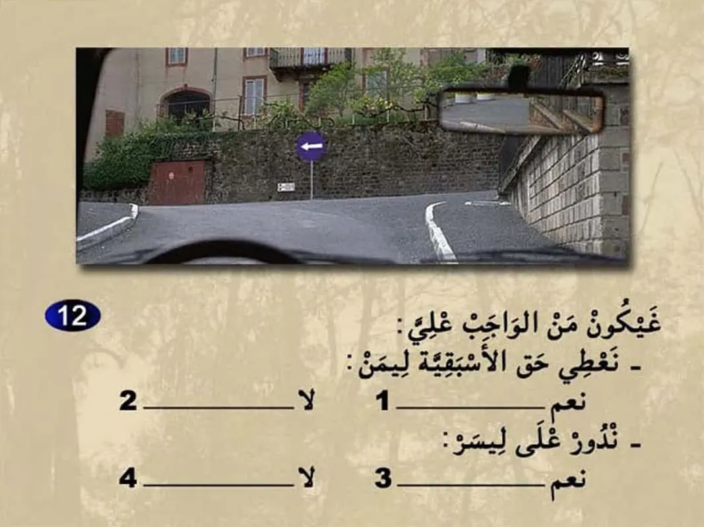
بيّن الجواب
الجواب الصحيح: 1 و 3
في ملتقيات الطرق مهما كان نوعها فالأسبقية دائما للعربات القادمة من الجهة اليمنى، وبالنسبة للعلامة الطرقية فهي تعني الإجبار لتغيير الإتجاه إلى اليسار.
السؤال 13
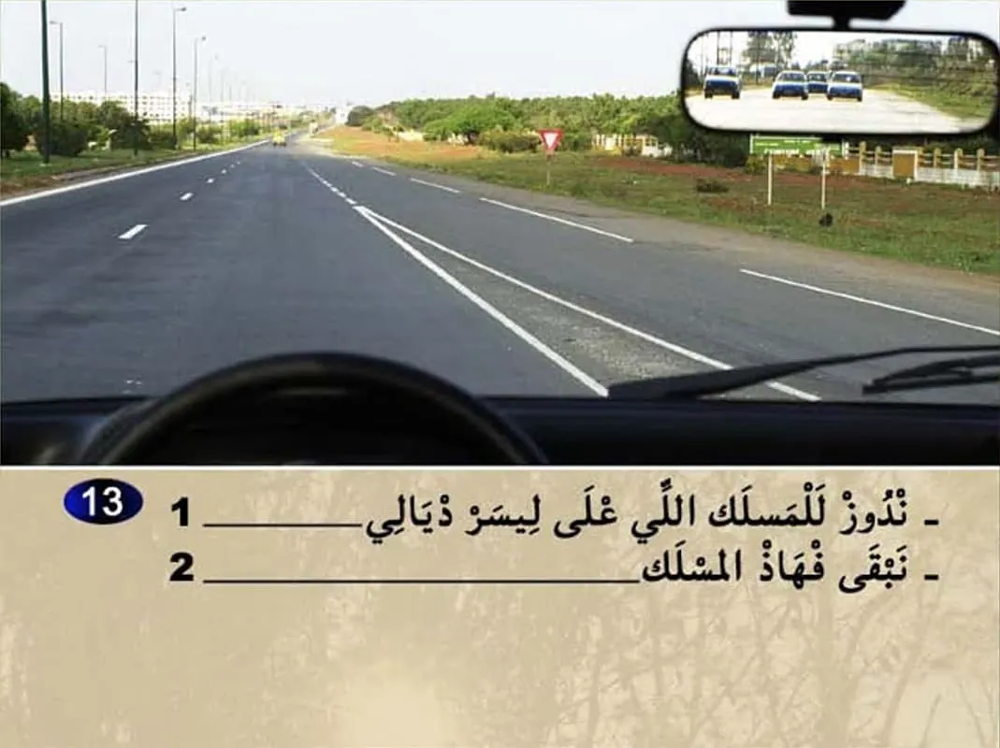
بيّن الجواب
الجواب الصحيح: 2
المسلك الموجود على أقصى اليسار فهو خاص للتجاوز، أما بالنسبة للمسار الموجود أقصى اليمين فهو خاص بالعربات القادمة من الجهة الأخرى والتي تريد الإندماج، بالنسبة لي فأنا موجود في المسلك الصحيح للسير، إذا أبقى في المسلك الخاص بي بدون تغيير المسلك.
السؤال 14
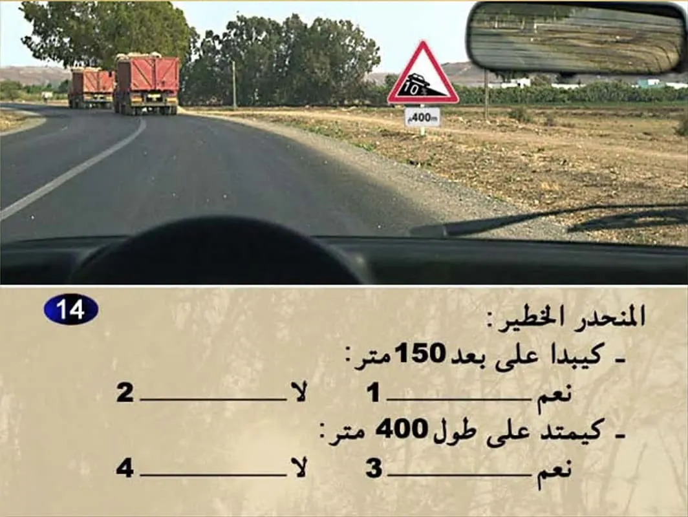
بيّن الجواب
الجواب الصحيح: 2 و 4
العلامة الطرقية تعني الخطر وهي تبدأ بعد 150 متر لكن في هذه الحالة توجد علامة تكميلية 400 متر، لذلك سوف نلغي القاعدة العامة، إذن المنحدر سوف يكون على بعد 400 متر. ولا يمتد على طول 400 متر لأنه لا يوجد علامة الإمتداد على طول 400 متر توجد فقط علامة تشير على أن المنحدر سوف يبدأ على بعد 400 متر.
السؤال 15
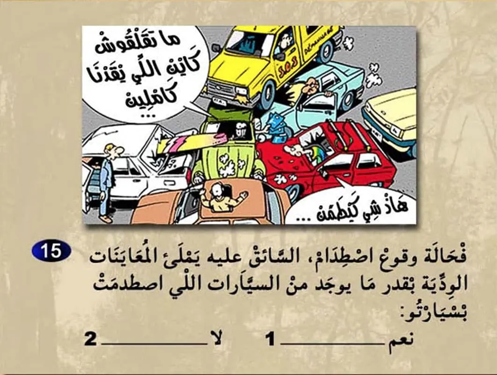
بيّن الجواب
الجواب الصحيح: 1
كل سيارة قامت بالأصطدام بي يجب عليّ أن أقوم بملئ معاينة ودية معها، مثلا أصطدمت بي سيارتين إذن يجب عليّ ملئ 2 معاينات ودية، أو مثلا أصطدمت بي 3 سيارات إذا سوف أقوم بملئ 3 معاينات ودية، وهكذا...
السؤال 16
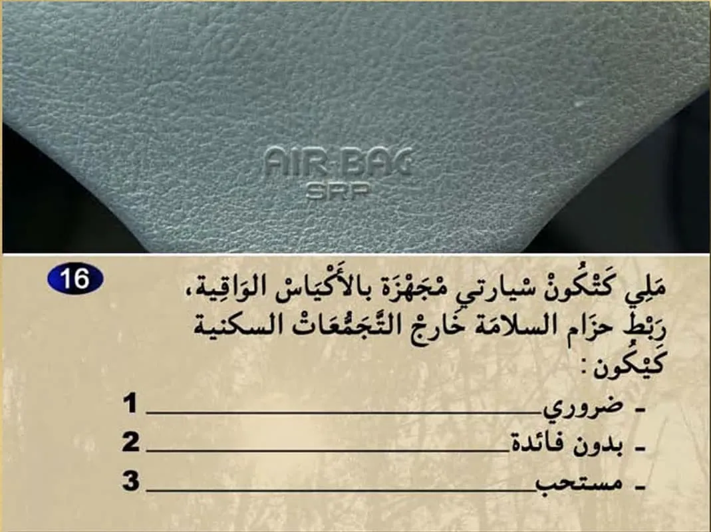
بيّن الجواب
الجواب الصحيح: 1
الأكياس الواقية ( Airbag ) يقلل فقط من خطر الإصطدام، لذلك حزام السلامة ضروري حتى مع وجود الأكياس الواقية ( Airbag ).
السؤال 17
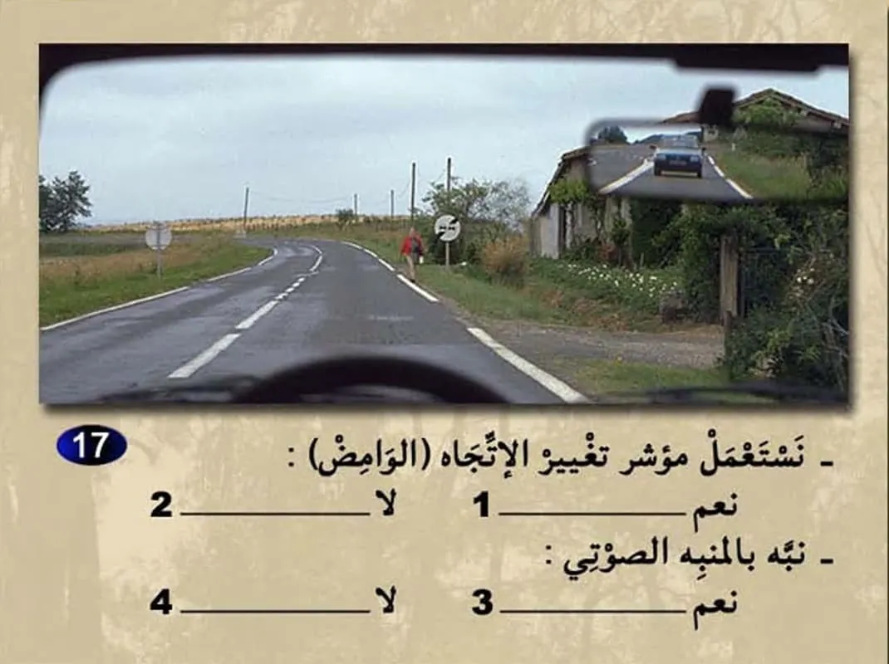
بيّن الجواب
الجواب الصحيح: 1 و 4
سوف أقوم بالإنحياز قليلا إلى الجهة اليسرى، لانه يوجد راجل قادم، أقوم بإستعمال مؤشر تغيير الإتجاه لأنه توجد سيارة من الخلف، و لا يوجد خطر لكي أنبه بالمنبّه الصوتي.
السؤال 18
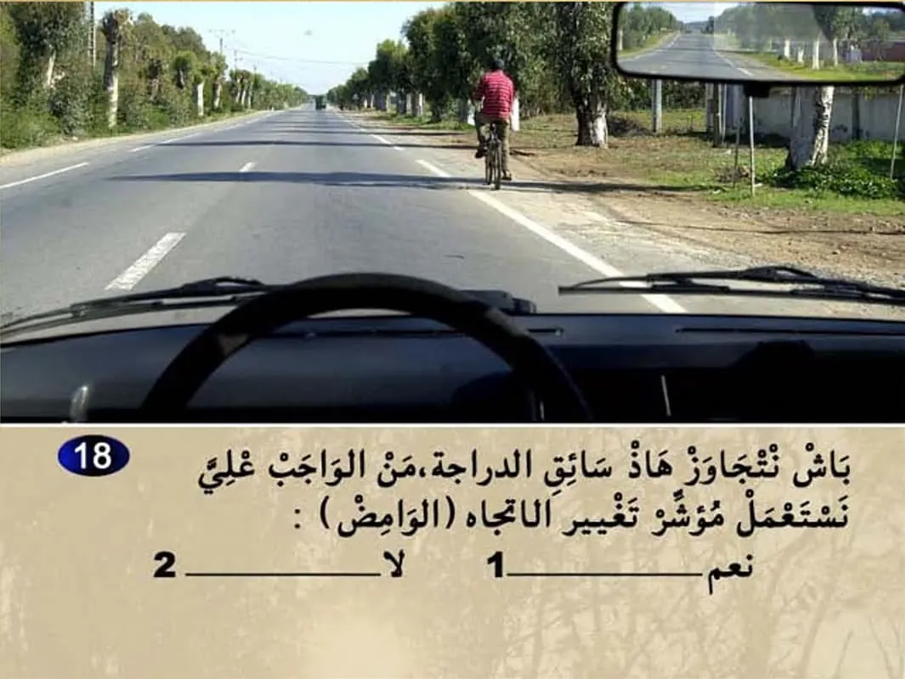
بيّن الجواب
الجواب الصحيح: 1
في كل مرة أريد أن أتجاوز أو أنحاز يجب عليّ أن أقوم بإستعمال مؤشر تغيير الإتجاه.
السؤال 19
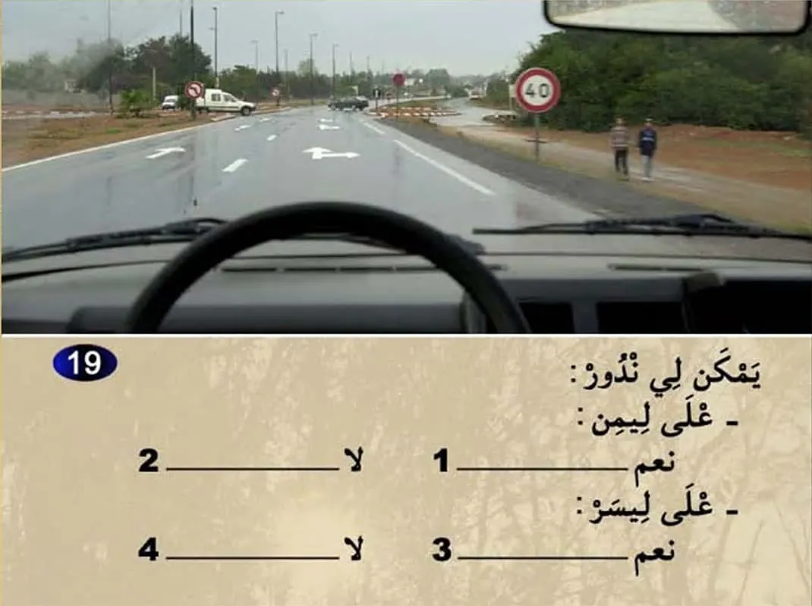
بيّن الجواب
الجواب الصحيح: 1 و 4
دائما يجب ملاحظة العلامات الطرقية الموجودة، مثلا في هذا السؤال يوجد تشوير عمودي يشير إلى السرعة القصوى محدودة في 40 كلم في الساعة، وأيظا يوجد علامة عمودية في الجهة اليسرى تشير إلى أنه ممنوع تغيير الإتجاه إلى اليسار، كما أنه يوجد كذلك تشوير أفقي الأسهم في المسلكين وهما يشيران إلى الإجبار. المسلك الموجود على اليسار فيشير التشوير الأفقي إلى الإجبار بالسّير مباشرة، بالنسبة للمسلك الذي أتواجد فيه الان فالتشوير الأفقي يجبرني للسّير مباشرة أو تغيير الإتجاه إلى اليمين.
السؤال 20
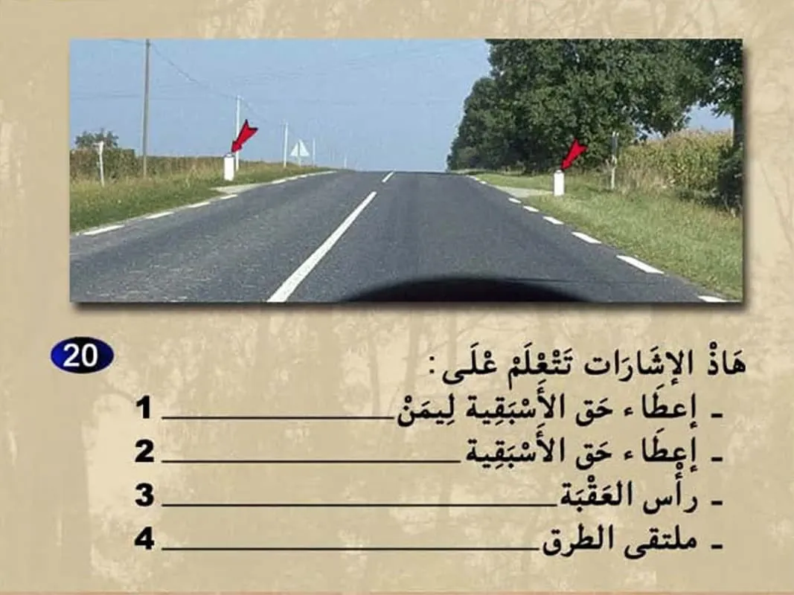
بيّن الجواب
الجواب الصحيح: 4
الإشارات الطرقية الظاهرة في الصورة فهي تشير الى ملتقى الطرق.
السؤال 21
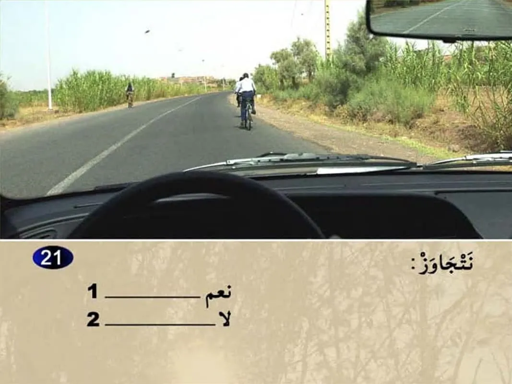
بيّن الجواب
الجواب الصحيح: 2
يوجد منعرج وكذلك يوجد خط متّصل يمنعني من التجاوز، لذلك لا يمكنني التجاوز في هذه الحالة.
السؤال 22
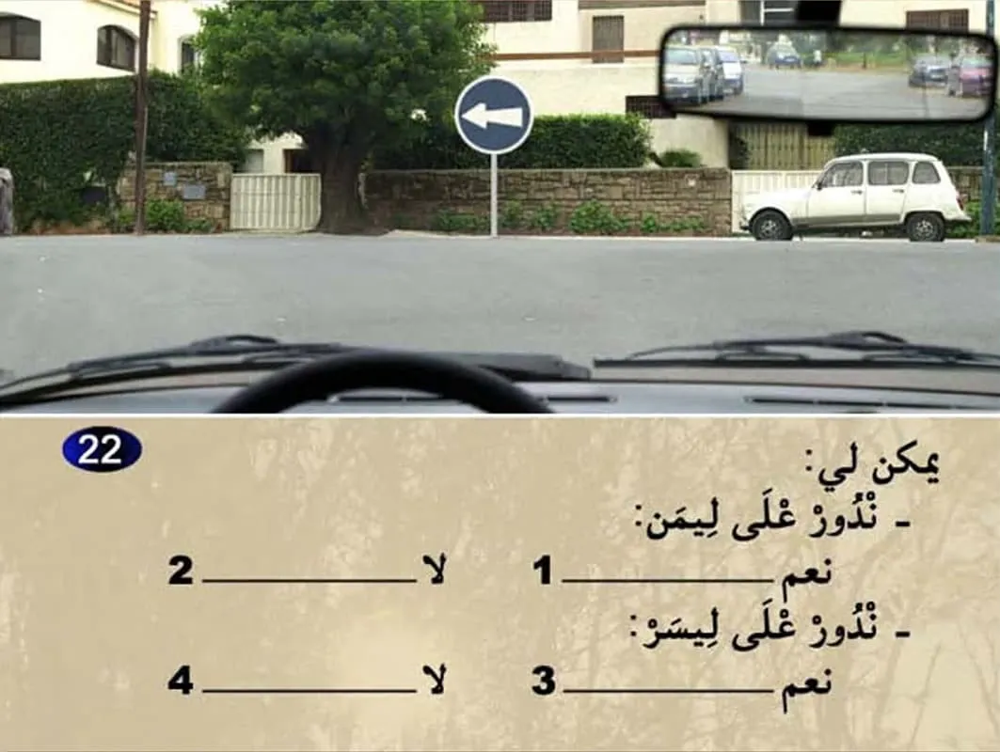
بيّن الجواب
الجواب الصحيح: 2 و 3
العلامة الطرقية تعني الإجبار إلى الجهة اليسرى، إذن يمكنني تغيير الإتجاه إلى الجهة اليسرى ولا يمكنني تغيير الإتجاه إلى الجهة اليمنى.
السؤال 23
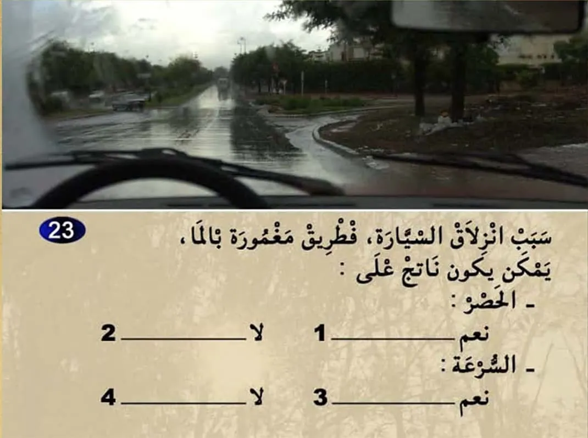
بيّن الجواب
الجواب الصحيح: 2 و 3
الإنزلاق ليس له علاقة بالفرامل. الإنزلاق يكون سببه إما السرعة أو العجلات في حالة سيئة، و في بعض الحالات تكون حالة الطريق، لأنها لا تكون بحالة جيدة فتكون أيظا سبب في الإنزلاق، مثلا الامطار الاولية تجعل من الطريق تحتوي على زيوت السيارات وتكون سبب كذلك في الإنزلاق، لذلك الحصر أو الفرامل ليست لها علاقة بالإنزلاق وبالنسبة للسرعة فلديها علاقة بالإنزلاق.
السؤال 24
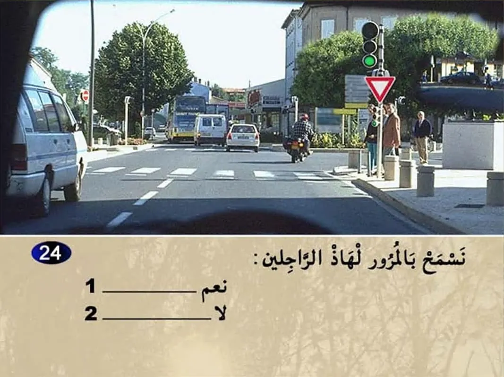
بيّن الجواب
الجواب الصحيح: 2
عند وجود إشارت ضوئية فتلغى الإشارات الطرقية الأخرى، في هذه الحالة الإشارة الضوية خضراء، تعطيني حق المرور، بالنسبة للراجلين فلديهم إشارة ضوئية تجبرهم على عدم المرور والإنتظار، لذلك في هذه الحالة لا أسمح بمرور الراجلين.
السؤال 25
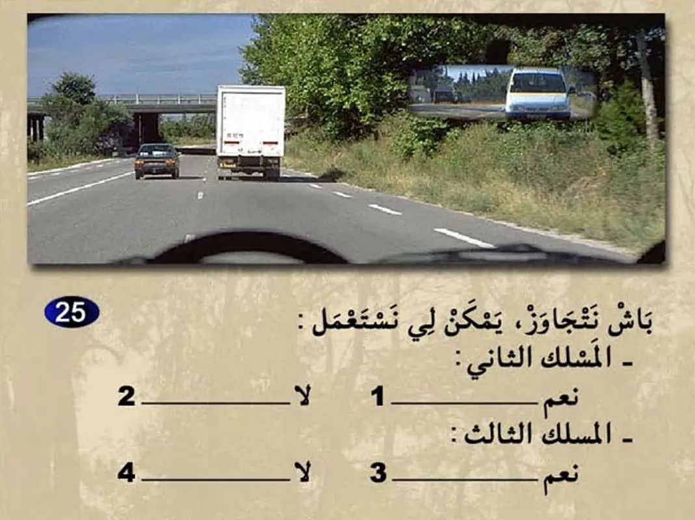
بيّن الجواب
الجواب الصحيح: 1 و 4
لدينا 3 مسالك في هذه الحالة، مسلك السير العادي والذي أسير فيه الان، المسلك الثاني هو مسلك التجاوز وبالنسبة للمسلك الثالث فلا يمكنني إستعماله لانه يوجد خط متصل ولا يمكنني تخطيه.
السؤال 26
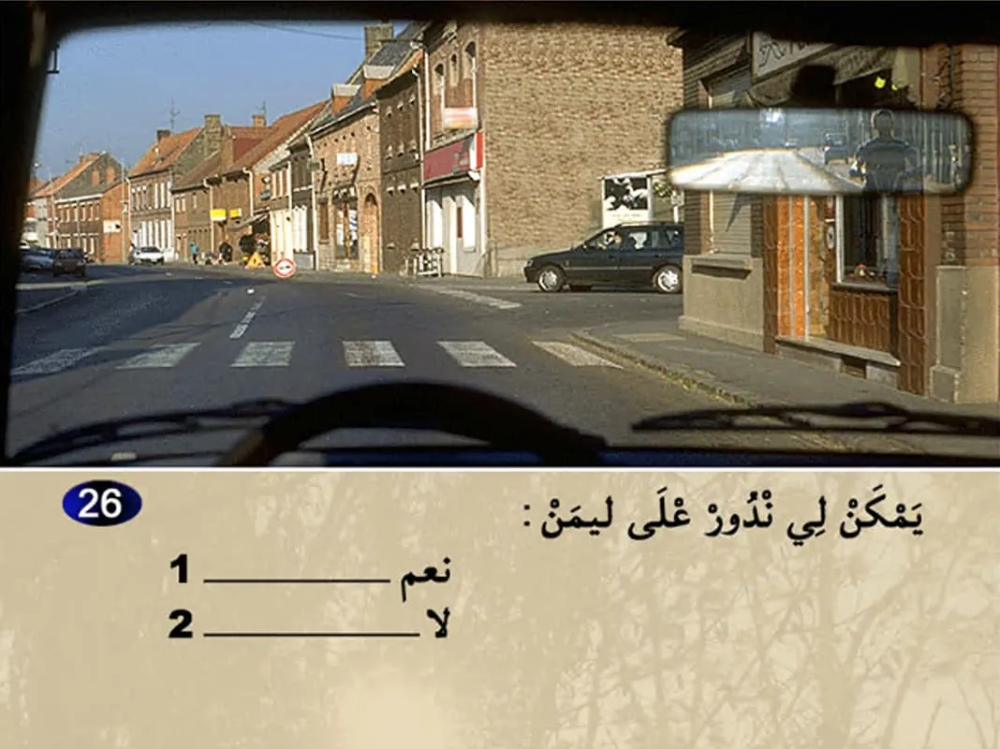
بيّن الجواب
الجواب الصحيح: 1
نحن نتواجد في ملتقى الطرق، كما هو واضح في الصورة فإذا أردت تغيير الإتجاه إلى الجهة اليمنى فيمكنني ذلك، الخط المتصل الذي تقف عنده السيارة فهو يعني علامة قف بالنسبة لها وهو غير مكتمل أي على طول الطريق، فقط النصف وهذا يعني أنه يمكنني تغيير الإتجاه إلى الجهة اليمنى. لو كان الخط متصل على طول تلك الطريق في هذه الحالة لا يمكنني تغيير الإتجاه إلى اليمين لأنه يعني في هذه الحالة على أن الطريق ذات إتجاه واحد ولا يمكنني المرور وتغيير الإتجاه. ويصبح ممنوع، إذن في هذه الحالة بما أن الخط مرسوم ويصل الى الوسط فقط فيمكنني تغيير الإتجاه الى اليمين.
السؤال 27
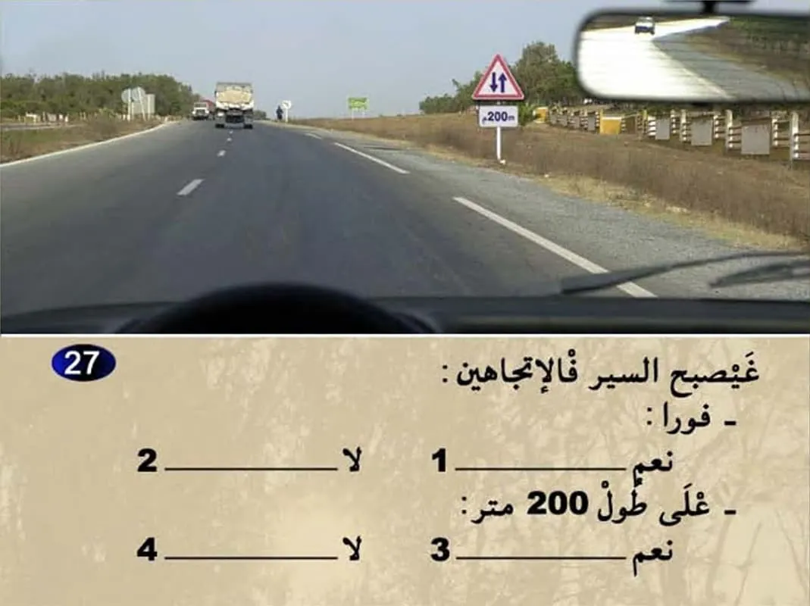
بيّن الجواب
الجواب الصحيح: 2 و 4
هذه من العلامت الإستثنائية للخطر التي نقوم بتطبيقها من عند العلامة، جميع علامات الخطر يتم تطبيقها على بعد 50 متر داخل المدينة و150 متر خارج المدينة، بإستثناء هذه العلامة التي يتم تطبيقها من عند العلامة، لكن في هذه الحالة نلغي القاعدة العامة لأنه يوجد علامة تكميلية تحتوي على 200 متر وهي تعني على بعد 200 متر سوف يصبح السير في الإتجاهين وليس فورا. (المرجو الإنتباه بين: على بعد، على طول أو على إمتداد) ليست نفس الشيئ والمعنى.
السؤال 28
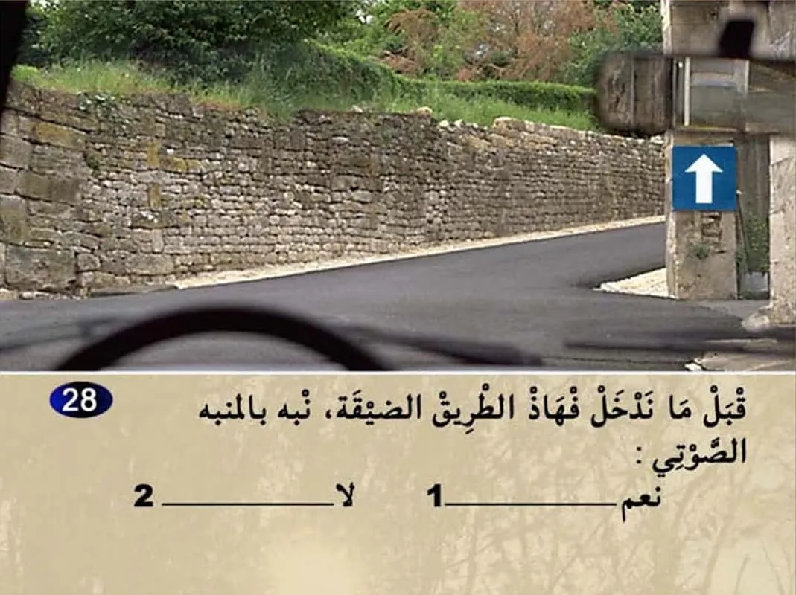
بيّن الجواب
الجواب الصحيح: 2
ليس عليّ التنبيه بالمنبّه الصوتي لأن الطريق ذات إتجاه واحد، يعني أنه لن أجد سيارات قامة في الإتجاه المعاكس، فلا داعي للتنبيه بالمنبّه الصوتي.
السؤال 29
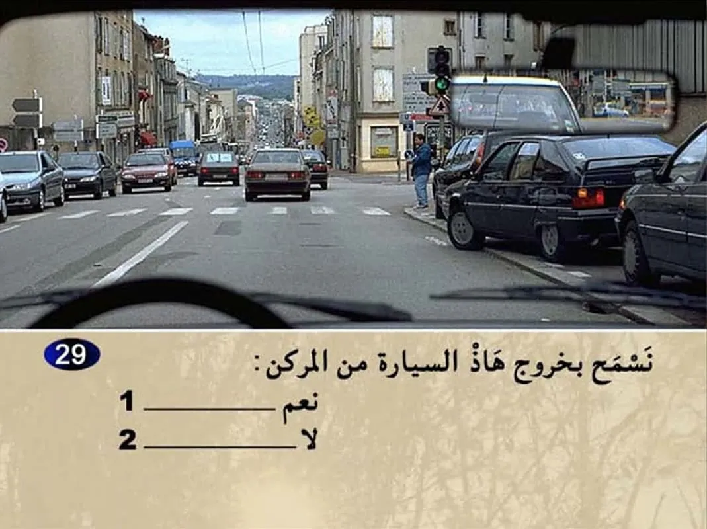
بيّن الجواب
الجواب الصحيح: 2
يوجد حالات يمكننا التّساهل وإعطاء حق المرور، لكن في هذه الحالة السيارة التي تستعد للإندماج ولم تندمج بعد لكي أسمح لها بالمرور كذلك توجد سيارة من الخلف وأيظا الإشارة الضوئية خضراء، لذلك يجب على السيارة السوداء أن تنتظر وبعد ذلك تندمج في حركة السير.
السؤال 30
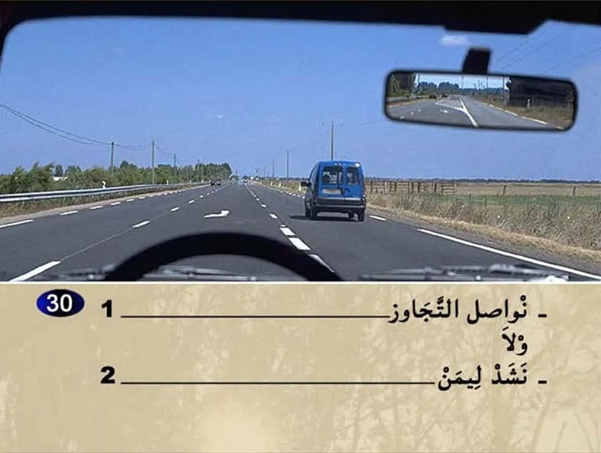
بيّن الجواب
الجواب الصحيح: 1
الإشارات الأفقية وهي الأسهم في الطريق لا تعنيني ولكن تعني السيارات القادمة في الإتجاه المعاكس، بما أن الخط المتقطع يسمح لي بالتجاوز فلا مشكلة في التجاوز ويمكنني مواصلة التجاوز.
السؤال 31
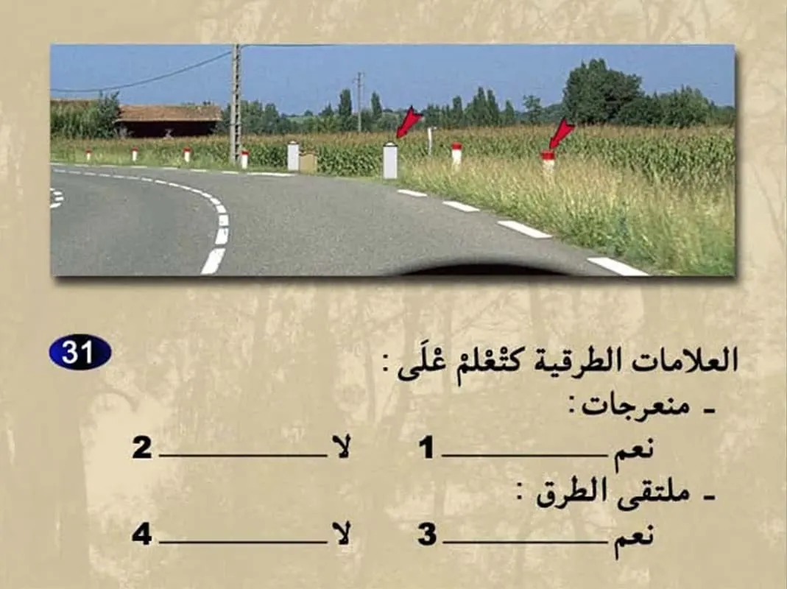
بيّن الجواب
الجواب الصحيح: 1 و 3
بالنسبة لهذه العلامات الطرقية التي تحتوي على لون أحمر فهي تعني المنعرج وبالنسبة للنوع الاخر والذي لا يحتوي على اللون الأحمر فهي تعني ملتقى الطرق، إذن هذه العلامات الطرقية تعني منعرجات وملتقيات الطرق.
السؤال 32
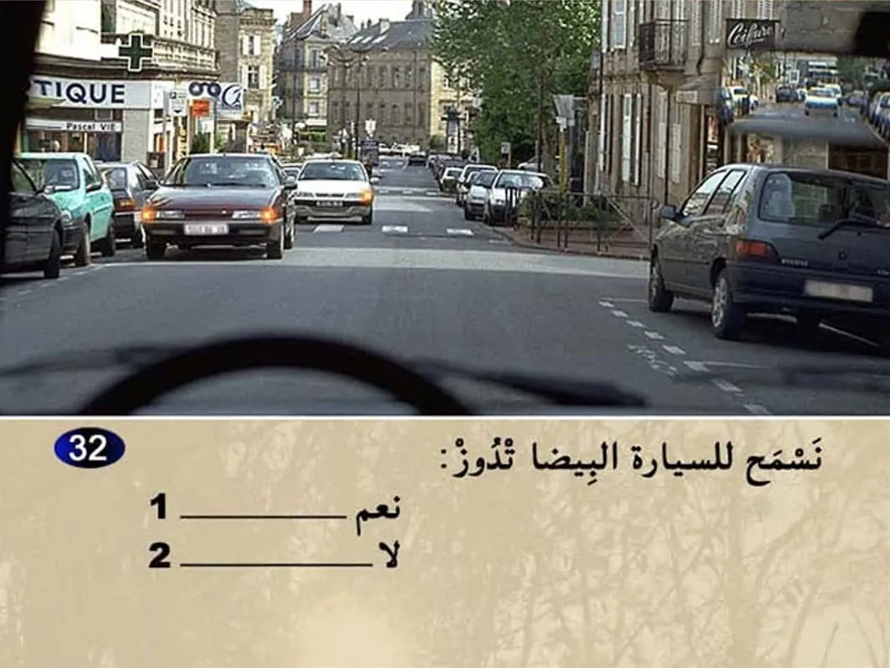
بيّن الجواب
الجواب الصحيح: 2
نحن تواجد في ملتقى الطرق، في هذه الحالة لدي أنا حق الأسبقية لأن الطريق الخاصة بي فارغة وبالنسبة للسيارة البيضاء توجد في مسلكها سيارة متوقفة يجب عليها الانتظار إلى حين أن تصبح الطريق مناسبة لتجاوز السيارة المقابلة والمرور، إذن لا أسمح للسيارة البيضاء بالمرور.
السؤال 33
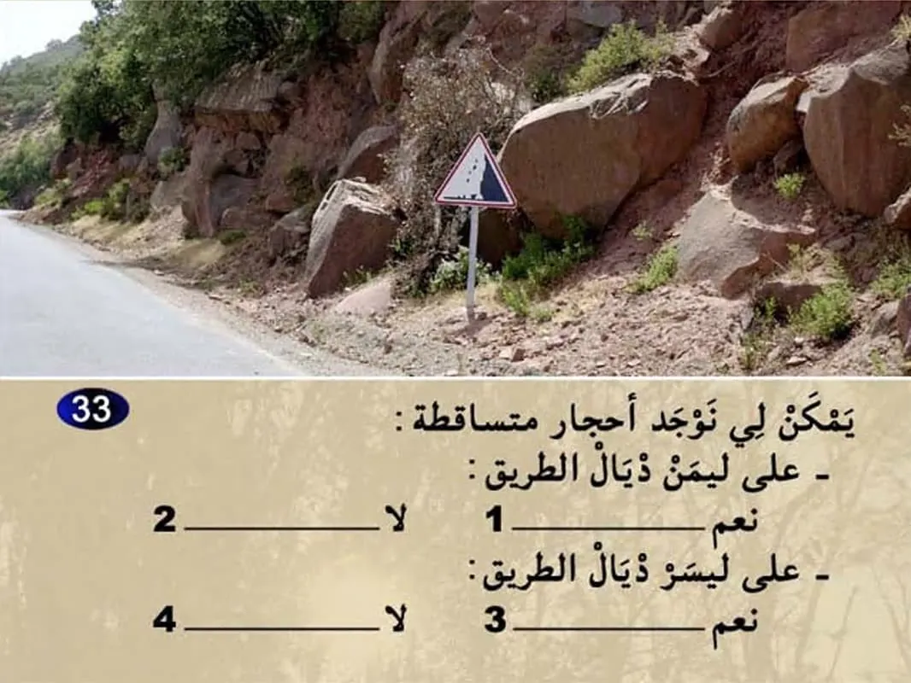
بيّن الجواب
الجواب الصحيح: 1 و 3
بالنسبة للعلامة الطرقية فهي تعني الخطر. تذكير: يوجد شيئان يأتيان من الجهة اليمنى واليسرى وهما: سقوط الأحجار وهبوب الرّياح.
السؤال 34
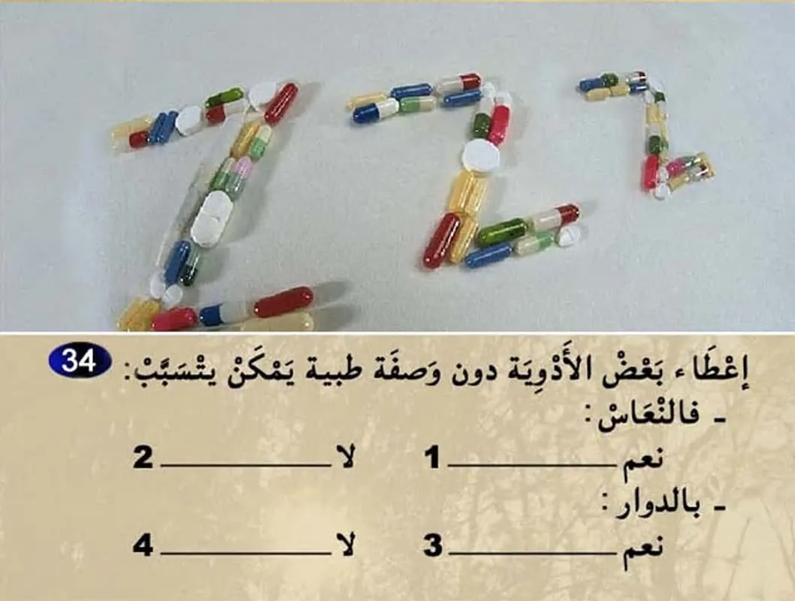
بيّن الجواب
الجواب الصحيح: 1 و 3
نعم يوجد بعض الأدوي التي تؤثر بشكل كبير على السّائق وتجعله يشعر بالنوم، وكذلك بعض الأدوية تشعره بالدوار، يجب الإنتباه عند تناول أي أدوية عند السياقة.
السؤال 35
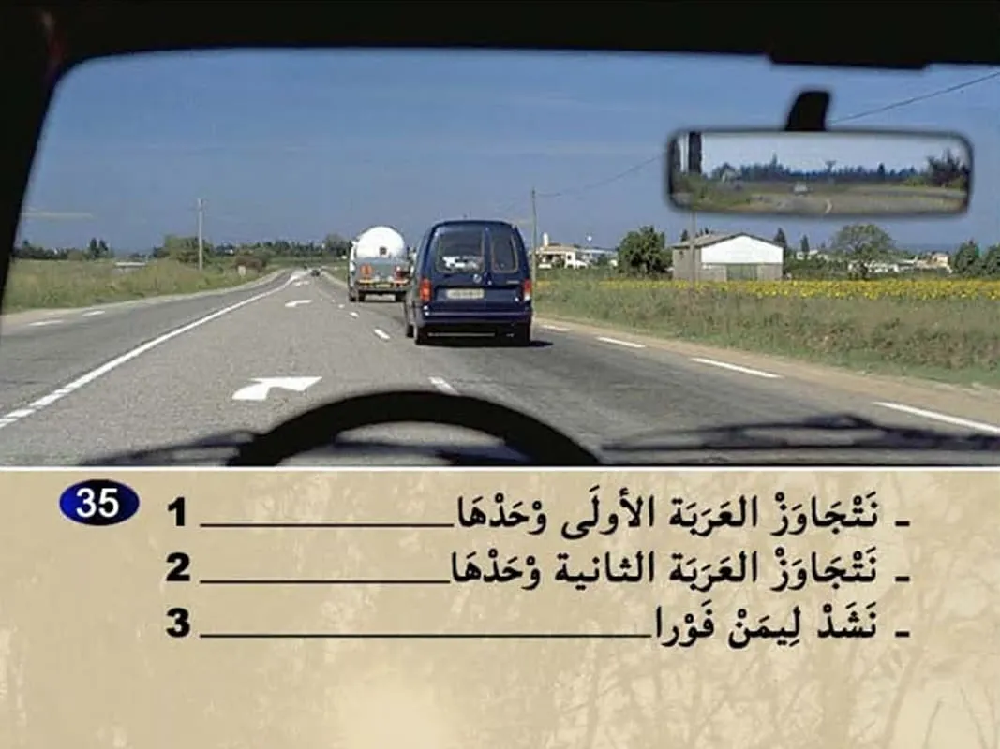
بيّن الجواب
الجواب الصحيح: 3
الإشارات الأفقية وهي الأسهم فهي تعني الإنحياز وهي تعلن عن الخط المتّصل، في هذه الحالة ممنوع التجاوز ويجب عليّ الإنحياز الى اليمين.
السؤال 36
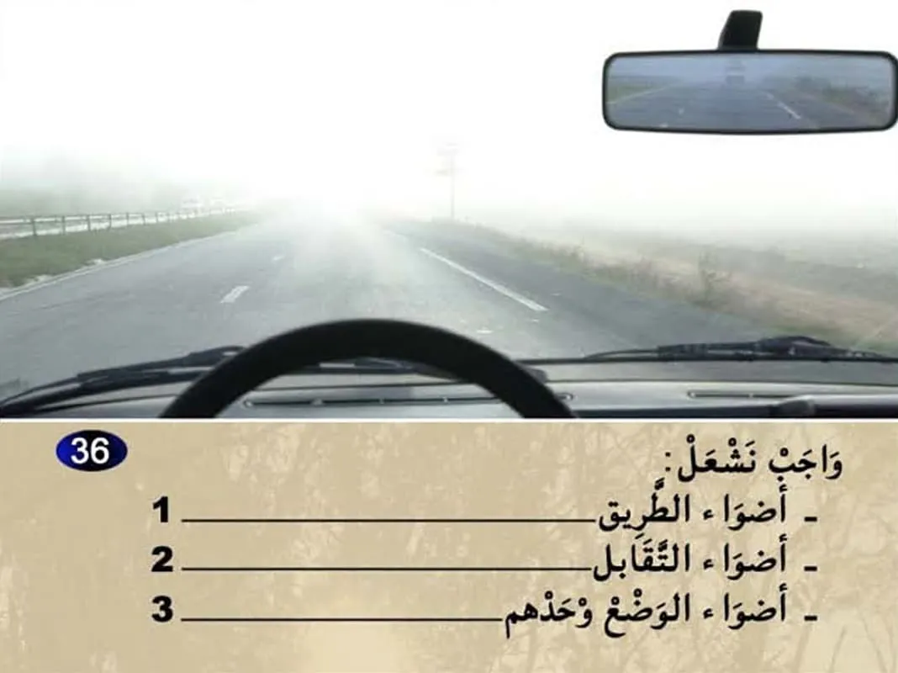
بيّن الجواب
الجواب الصحيح: 2
ذا خطأ ولا يمكن السير فقط بأضواء الوضع.
⚠️ ملاحظة: يمكن استعمال أضواء الوضع في آن واحد مع أضواء الطريق وأضواء التقابل والأضواء الخاصة بالضباب، ويمكن كذلك استعمالها وحدها عند وقوف المركبة أو توقفها أو عندما تكون ظروف الإنارة على الطرق، ماعدا الطريق السيار أو الطرق ذات المسالك الخاصة. الجواب الصحيح هو رقم 2.
السؤال 37
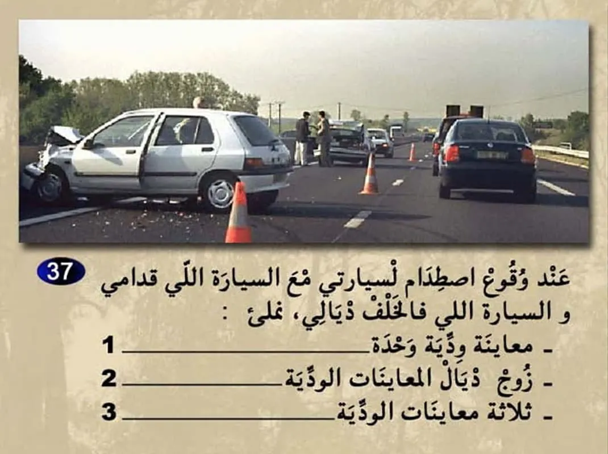
بيّن الجواب
الجواب الصحيح: 2
بصفة عامة أي سيارة قامت بالإصدام بي يجب ملئ معاينة ودية معها، في هذه الحالة بما أني إصطدمت بسيارة في الأمام وسيارة في الخلف يعني سيارتين إذن يجب عليّ ملئ 2 معاينات ودية.
السؤال 38
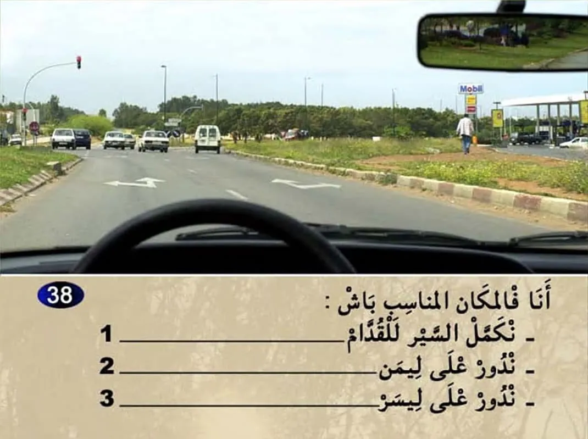
بيّن الجواب
الجواب الصحيح: 1 و 3
التشوير الأفقي الأسهم في الطريق فهي تعني الإجبار، في المسلك الذي أسير فيه فالأسهم تجبرني على تغيير الإتجاه إلى اليسار أو إكمال السير مباشرة.
السؤال 39
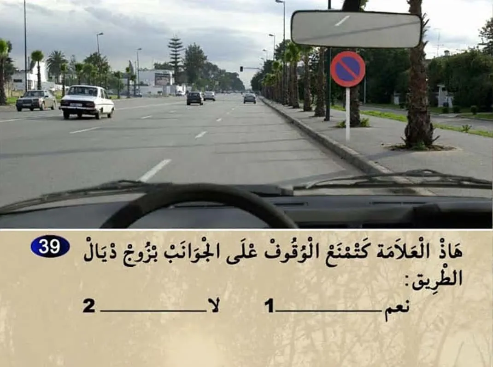
بيّن الجواب
الجواب الصحيح: 2
العلامة تعني الوقوف في الجهة التي أتواجد فيها، أي في هذا الطريق.
السؤال 40
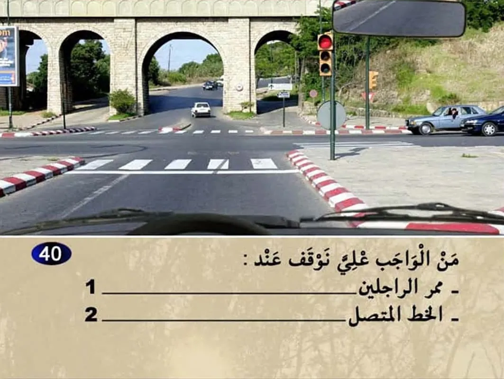
بيّن الجواب
الجواب الصحيح: 2
لا يمكن الوقوف فوق ممر الراجلين لأنه ممنوع وهو خاص بالراجلين، عندما يريد الراجلين عبور الطريق، يجب علي أن أقوم بالوقوف عند الخط المتصل.